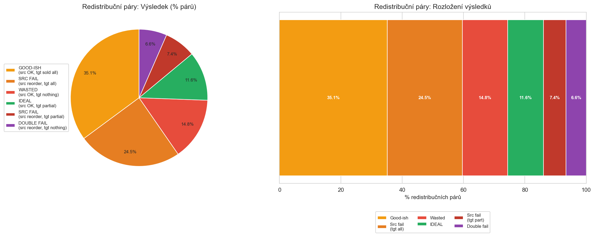
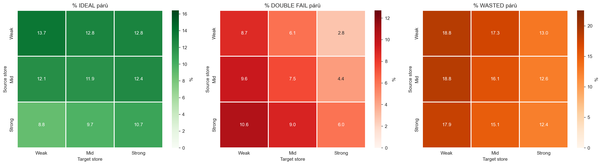
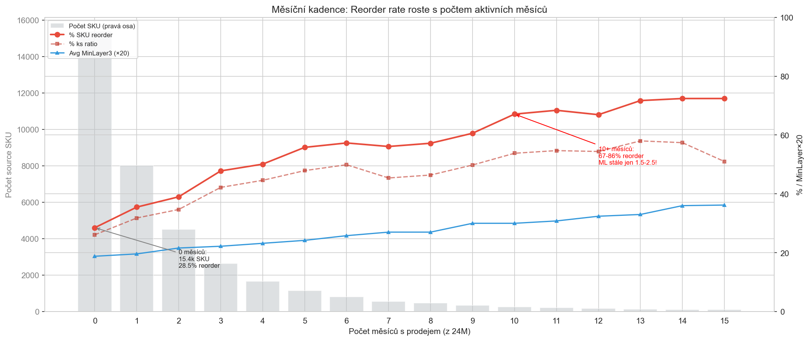
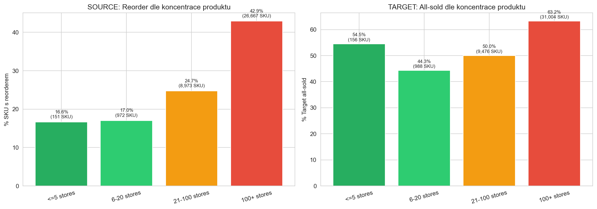
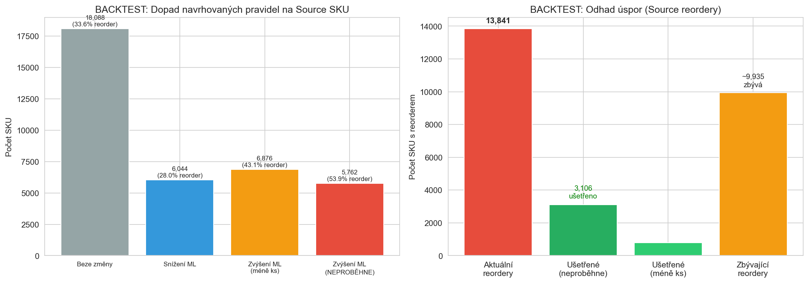

Rozšířená analytika: 5 nových analýz + Backtest
CalculationId=233 | EntityListId=3 | 2026-03-22 03:14
1. Párová analýza Source↔Target
Každý z 42,404 redistribučních párů klasifikován dle výsledku na obou stranách:
11.6%
IDEAL
src OK + tgt partial
35.1%
GOOD-ISH
src OK + tgt all sold
14.8%
WASTED
src OK + tgt nothing
6.6%
DOUBLE FAIL
src reorder + tgt nothing

Pouze 11.6% párů je IDEÁLNÍCH (source nereorderoval + target prodal částečně = zůstal 1+ ks).
35.1% je "good-ish" (source OK, ale target prodal vše → spustí reorder na targetu).
6.6% je DOUBLE FAIL – source musel reorderovat A zároveň target neprodal nic. To je 2,781 párů = čistá ztráta.
14.8% je WASTED – source nepotřeboval reorder, ale target nic neprodal → zbytečný přesun 6,853 ks.
Párové výsledky dle toku Source→Target (síla prodejny)

Nejvíc IDEAL párů: Weak→Weak (13.7%), Weak→Strong (12.8%), Weak→Mid (12.8%). Přesouvání ze slabých prodejen funguje nejlépe!
Nejvíc DOUBLE FAIL: Strong→Weak (10.6%), Weak→Weak (8.7%), Mid→Weak (9.6%). Posílání na slabé prodejny z jakéhokoliv zdroje má vysoký double-fail.
Nejvíc WASTED: Mid→Weak a Weak→Weak (18.8%). Na slabé prodejny se často neprodá nic.
Závěr: Nejlepší tok je Weak→Strong (2.8% double fail, 13.0% wasted). Nejhorší je *→Weak.
Pravidla pro target by měla omezit posílání na slabé prodejny.
2. Redistribuční smyčka (Y-STORE TRANSFER loop)
3,117 source SKU (8.5%) obdrželo po redistribuci nový Y-STORE TRANSFER inbound = byly redistribuovány ZNOVU.
4,054 ks
Znovu redistribuováno
160 dní
Průměr dní do smyčky
71.6%
Z toho ML3=1 Zero-sellers
71.6% smyčkových SKU (2,231) jsou zero-sellers s MinLayer3=1.
Tyto SKU neměly žádné prodeje za 6M, byly redistribuovány, a za ~160 dní přišla další redistribuce zpět na ně.
Loop ratio je ~100% – vrátí se prakticky stejné množství, co se odvezlo. To je cyklické přesouvání bez přidané hodnoty.
Doporučení: SKU, které byly v posledních 6-12 měsících redistribuovány, by měly mít zvýšený MinLayer (+2).
Toto by eliminovalo většinu smyček.
3. Měsíční kadence prodejů (24M)
Kolik měsíců z posledních 24 mělo alespoň 1 prodej? Toto je výrazně lepší prediktor než binární 6M frekvence.

Reorder rate roste téměř lineárně s počtem aktivních měsíců:
0 měsíců → 28.5% | 3 měsíce → 47.8% | 6 měsíců → 57.3% | 10 měsíců → 67.1% | 16+ měsíců → 81%
Ale MinLayer roste mnohem pomaleji! 0 měsíců: ML=0.94 | 10 měsíců: ML=1.50 | 16 měsíců: ML=1.86
SKU s 10+ aktivními měsíci má 67%+ reorder, ale průměrný MinLayer je jen 1.5! To je zásadní nesoulad.
Doporučení: Počet aktivních měsíců (z 24M) by měl být PRIMÁRNÍ vstup pro MinLayer kalkulaci.
Navrhovaná tabulka: 0M→ML0, 1-2M→ML1, 3-5M→ML2, 6-9M→ML3, 10-15M→ML4, 16+M→ML5.
4. Koncentrace produktu
Na kolika prodejnách se produkt prodává? Koncentrovaný produkt (málo prodejen) = redistribuce na novou prodejnu rizikovější.

Masivní rozdíl: Produkty prodávané na <=20 prodejnách: 16.6-17.0% source reorder.
Produkty na 100+ prodejnách: 42.9% source reorder – 2.5× víc!
Proč? Široce distribuované produkty se prodávají pravidelněji → vyšší šance, že se na source prodá odvezený kus.
Koncentrované produkty se prodávají jen na několika místech → na source se po redistribuci nic nestane.
Target: 100+ prodejen = 63.2% all-sold (vs. 44.3% u 6-20 prodejen). Široce distribuované produkty se prodávají všude → i na targetu se prodá vše.
Doporučení: Počet prodejen produktu jako vstup pro MinLayer. Widespread (100+): +1 na source ML, -1 na target ML (nepotřebujeme tam tolik, prodá se i méně).
5. Backtest navrhovaných Source pravidel
Aplikace navrhovaných pravidel (sales pattern × store strength → MinLayer 0-5) na skutečná data kalkulace 233.

| Dopad | SKU | % z celku | Mělo reorder | % reorder | Reorder ks | Redistrib. ks | Qty ratio |
|---|
| Beze změny (ML stejný) | 18,088 | 49.2% | 6,083 | 33.6% | 7,047 | 23,107 | 30.5% |
| Snížení ML (víc se odveze) | 6,044 | 16.4% | 1,691 | 28.0% | 1,910 | 7,430 | 25.7% |
| Zvýšení ML (odveze se méně) | 6,876 | 18.7% | 2,961 | 43.1% | 4,340 | 11,973 | 36.2% |
| Zvýšení ML → NEPROBĚHNE | 5,762 | 15.7% | 3,106 | 53.9% | 3,318 | 6,244 | 53.1% |
5,762 SKU by se neredistribuovalo (navrhovaný ML >= aktuální zásoba).
Z nich 3,106 (53.9%) skutečně mělo reorder → tyto reordery bychom ušetřili!
Ale 2,656 (46.1%) nemělo reorder → tyto redistribuce by se ztratily (false positive).
Bilance:
- Ušetřeno: 3,106 zbytečných reorderů (SKU) a 3,318 ks reorder množství
- Ztraceno: 2,823 ks úspěšných redistribucí (SKU kde nebylo reorder a redistribuce proběhla)
- Čistý přínos: 3,318 - 2,823 = 495 ks netto úspora
- Plus: 6,876 SKU s méně redistribuovanými ks (43.1% reorder) → další úspory
Celkový odhad: Snížení reorderu z 13,841 na ~9,000-10,000 SKU (27-35% úspora).
6. Ověření: Trend analýza používá jen PRE-redistribuční data
Kontrola, zda vstupní data pro product trend jsou výhradně z období PŘED redistribucí:
| Období | Datum od | Datum do | Status |
|---|
| Sales_Older (referenční) | 2024-07-13 | 2025-01-12 | PRE-redistribuce |
| Sales_Recent (srovnávané) | 2025-01-13 | 2025-07-12 | PRE-redistribuce |
| Redistribuce | 2025-07-13 | REFERENČNÍ DATUM |
| Post-redistribuce (výsledky) | 2025-07-13 | 2026-03-22 | POST (jen výsledky) |
POTVRZENO: Trend analýza (Growing/Declining/Stable) je počítána výhradně z dat PŘED redistribucí.
Oba srovnávané periody (Older: 2024-07 až 2025-01, Recent: 2025-01 až 2025-07) končí před referenčním datem.
Výsledky redistribuce (reorder/oversell/not-sold) jsou z POST období a slouží jen k vyhodnocení, ne jako vstup.
Trend je tedy validní prediktor pro decision tree.
2026-03-22 03:14 | CalculationId=233 | EntityListId=3